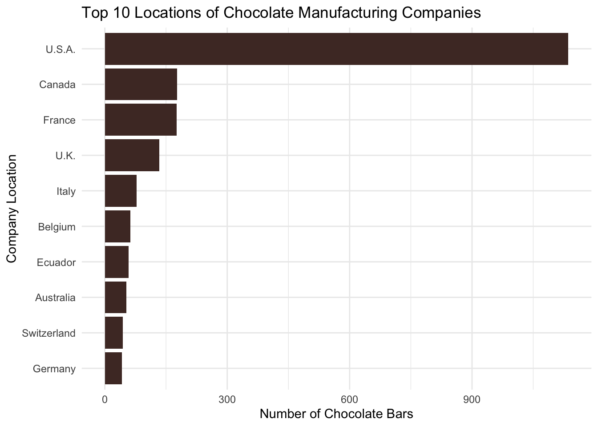
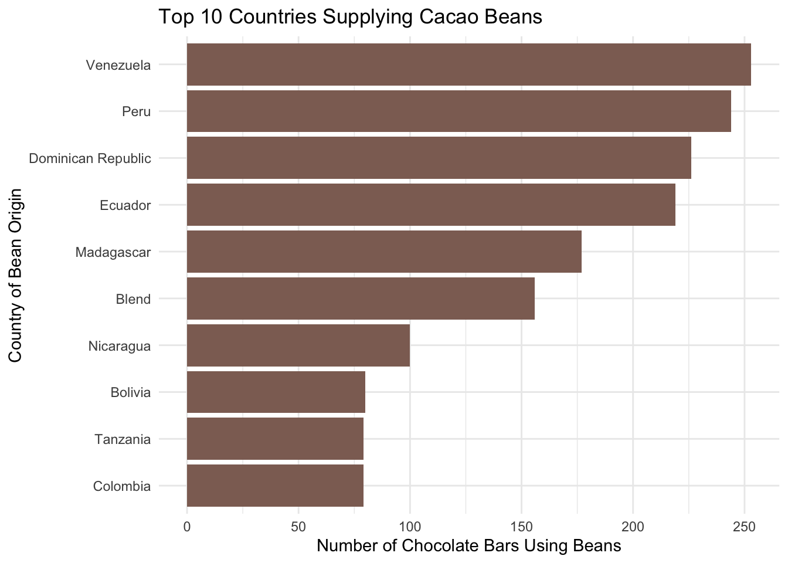
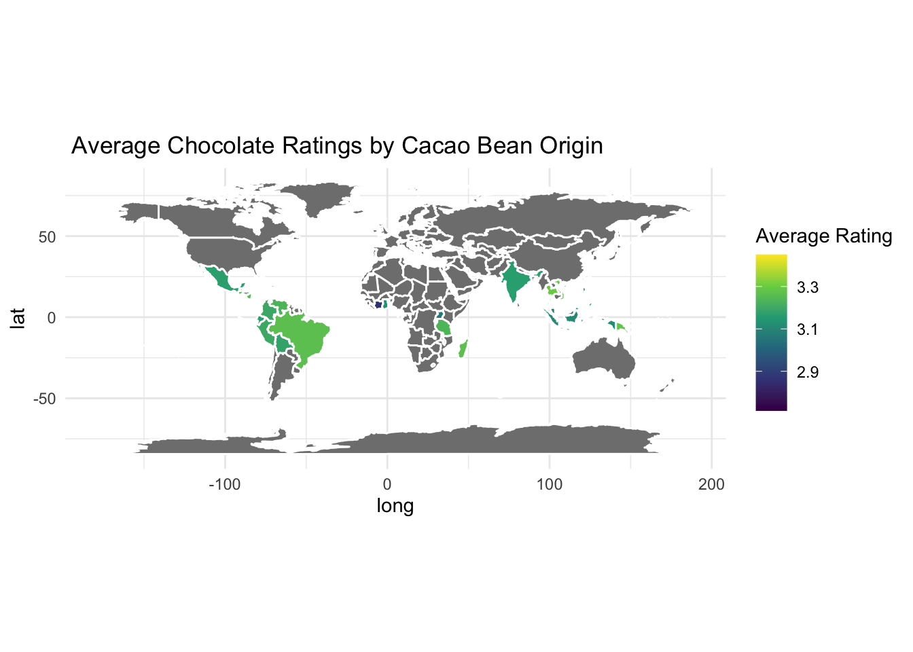

Chocolate is one of the most consumed foods in the world, yet there is a complex journey from the cacao bean to be a chocolate bar that is invisible for us, consumers. In this blog post, I analyzed the Chocolate Bar Ratings dataset found in TidyTuesday (January 18, 2022). The dataset contains 2,530 observations, each row represents a chocolate bar. The dataset includes information about the manufacturer of the chocolate, location of company producing the bar, country where the cacao beans are originally from and the rating.
The dataset used in this blog can be found through the TidyTuesday repository: https://github.com/rfordatascience/tidytuesday/blob/main/data/2022/2022-01-18/chocolate.csv
tuesdata <- tidytuesdayR::tt_load('2022-01-18')
---- Compiling #TidyTuesday Information for 2022-01-18 ----
--- There is 1 file available ---
── Downloading files ───────────────────────────────────────────────────────────
1 of 1: "chocolate.csv"
tuesdata <- tidytuesdayR::tt_load(2022, week =3)
---- Compiling #TidyTuesday Information for 2022-01-18 ----
--- There is 1 file available ---
── Downloading files ───────────────────────────────────────────────────────────
1 of 1: "chocolate.csv"
chocolate <- tuesdata$chocolate
The main question guiding this analysis is: Where is chocolate produced, where do the cacao beans originate, and how do these locations differ?
Understanding this distinction is important because the global chocolate supply chain is under the scope because of lack of fairness and labor practices. Companies like Tony’s Chocolonely have brought attention to injustices in the chocolate industry, specifically on cacao farmers compensation. This analysis will dive into locations of chocolate manufacturers compare to the country where cacao beans originate.
Where Chocolate Bars Are Manufactured
We will now observe the top ten locations of chocolate manufacturinf companies in the dataset.
library(maps)library(tidyverse)
── Attaching core tidyverse packages ──────────────────────── tidyverse 2.0.0 ──
✔ dplyr 1.1.4 ✔ readr 2.1.5
✔ forcats 1.0.0 ✔ stringr 1.5.1
✔ ggplot2 4.0.0 ✔ tibble 3.3.0
✔ lubridate 1.9.4 ✔ tidyr 1.3.1
✔ purrr 1.1.0
── Conflicts ────────────────────────────────────────── tidyverse_conflicts() ──
✖ dplyr::filter() masks stats::filter()
✖ dplyr::lag() masks stats::lag()
✖ purrr::map() masks maps::map()
ℹ Use the conflicted package (<http://conflicted.r-lib.org/>) to force all conflicts to become errors
# A tibble: 10 × 2
company_location n
<chr> <int>
1 U.S.A. 1136
2 Canada 177
3 France 176
4 U.K. 133
5 Italy 78
6 Belgium 63
7 Ecuador 58
8 Australia 53
9 Switzerland 44
10 Germany 42
ggplot(chocolate_companies, aes(x =reorder( company_location,n), y=n))+geom_col(fill ="#4E342E")+coord_flip()+labs(title ="Top 10 Locations of Chocolate Manufacturing Companies",x ="Company Location",y ="Number of Chocolate Bars" )+theme_minimal()

The chart shows that the top chocolate companies are located in NorthAmerica and Europe, including countries like the United States, Canada, France and the United Kingdom. These regions have long traditions of chocolate production and have many well know chocolate brands like Hersheys, Ghirardelli and Cadbury.
Main takeaway from the visualization is that most chocolate bars in the dataset are produced by companies located in wealthy regions of the world, specifically Europe and North America.
Where Cacao Beans Come From
We now will focus on countries supplying cacao beans used in the chocolate bars from the dataset. We will get an overview of the countries where these cacao beans originally come from.
ggplot(bean_counts, aes(x =reorder( country_of_bean_origin,n), y=n))+geom_col(fill ="#8D6E63")+coord_flip()+labs(title ="Top 10 Countries Supplying Cacao Beans",x ="Country of Bean Origin",y ="Number of Chocolate Bars Using Beans" )+theme_minimal()

The bar plot shows that cacao beans commonly originate from countries such as Venezuela, Peru, Dominican Republic, Madagascar, and Tanzania. These countries are particularly located in tropical regions, which are ideal for growing cacao plants.
At this point its is evident that there is a patternt becoming clear: the countries producing cacao beans are very different from the countries where chocolate bars are manufactured and taking credit with big brands and factories. Manufacturing companies are concentrated in Europe and North America, cacao farming takes place primarly in regions of Latin America, Africa and Southeast Asia.
The geographic separation is one of the reasons why fairness in the chocolate industry is discussed. Companies have used their platform to bring attention to issues like child labor and unfair compensation to the farmers in charge of the cacao beans. Examining where cacao originates and where it gets manufactured, the data and visualization do illustrate the structure of this industry.
Average Chocolate Ratings By Cacao Beans Origins
In this visualization we will dive into chocolate ratings varying depending on the country where the cacao beans originated. The map shows average rating of chocolate bars associated to the beans from each country. Because I do consider that we should credit the country where the beans are from.
world =map_data("world")bean_rates = bean_rates|>rename(region = country_of_bean_origin)world_chocolate = world |>left_join(bean_rates, by ="region")ggplot(world_chocolate,aes(x=long, y=lat, group=group, fill=averageRating))+geom_polygon(color="white")+coord_fixed()+scale_fill_viridis_c()+labs(title =" Average Chocolate Ratings by Cacao Bean Origin",fill ="Average Rating" )+theme_minimal()

Some regions are popular among high rated chocolate bars, countries like Peru, Ecuador and Venezuela. Which going back to our previous visualizations these are countries recognized for producing the most cacao beans which are valued by chocolate makers.
This visualization adds another layer of insight. Chocolate bars are manufactured in Europe and North America, but the beans related with high rated chocolate are from countries in Latin America and other tropical regions. The quality of chocolate is very related to the cacao grown regions that are when sold not even mentioned and just given credit to the countries where they get manufactured and sold.
Nevertheless, it is crucial to understand that the ratings reflect the finished chocolate bar, not just the unprocessed beans. Chocolate quality depends on both cacao, manufacturing process, like roastings, ingredients and crafting.
Conclusion and Wrap-Up
This analysis highlights how the geography of chocolate production highly differs from the geography of cacao farming. Our visualizations expose that chocolate manufacturing companies are largely located in Europe and North Ameruca, while cacao beans from these chocolate bars come from the tropical areas from Latin America, Africa and Southeast Asia. These patterns help us get a picture of the global structure of the chocolate industry and raises questions about the value, recognizition and fairness atrributed to those who are producing the base products.
What makes this pattern meaningful is the human aspect behind the dataset. Advocacy efforts from companies like Tony’s Chocolonely have showcased how cacao farmers in many producing regions often receive a small portion of profits generated by chocolate products sold on a global scale. Observing this clear geographic separation between manufacting and cacao producers makes the discussion more tangible.
There are also some limitations to this analysis. The data set is based on chocolate bar reviews, it would be interesting to explore global cacao production or trade volumes. Another factor is that chocolate ratings reflect on the final product, which depends on both manufacturing process and cacao beans.
As someone who enjoys chocolate, I wish I would have taken pride throughout my life that my favorite chocolate brands used Latin American cocoa beans to make their delicious products and actually cared about the farmers, or that these countries from my region where the primary product producers for highly rated chocolates recognized everywhere around the world.
Connection to Class Ideas
The visualizations used in this analysis reflect the principles studied regarding effective data communications. Bar charts were used to compare counts across countries, which are appropiate for categorical comparisons. The world map was used to display a geographic pattern in cacao origins and chocolate rating, allowing the viewer to easily identify regional trens, like the tropics.
Graphs were designed to reduce visual clutter and focus the attention on the patterns and make easy comparisons. Minimal themes, clear axis labels, and color choices that do follow the chocolate theme and are color blind friendly. This aligns with effectiveness and avoids distractions.
Finally the sequency in which data is presented creates a stortytellinf structure. First introducing where the companies are located, second where cacao beans originate and finally connecting origins to ratings. The visualizations to be introduced in this order to the reader, helps to gradually build an understanding of the chocolate supply chain and help communicate the urgent matter and meaningful story.